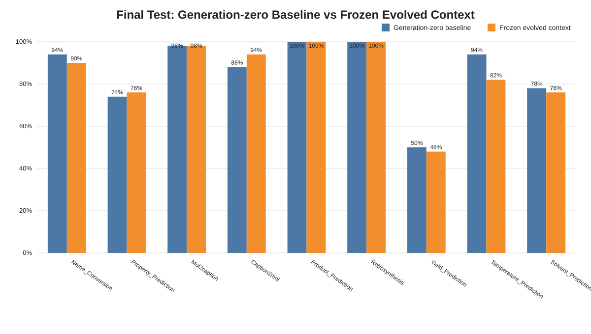
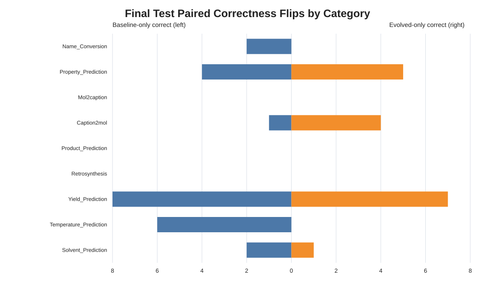
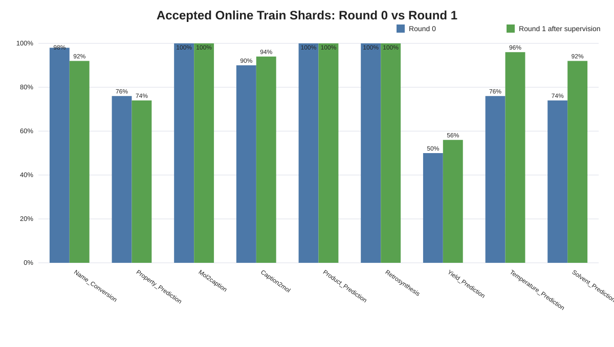
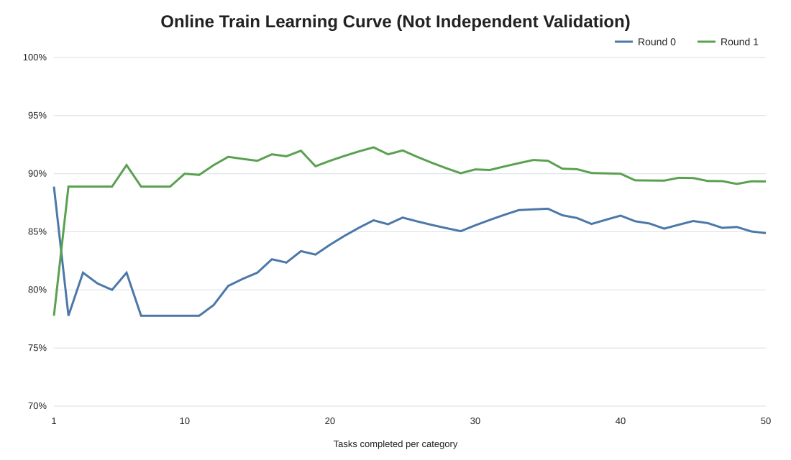
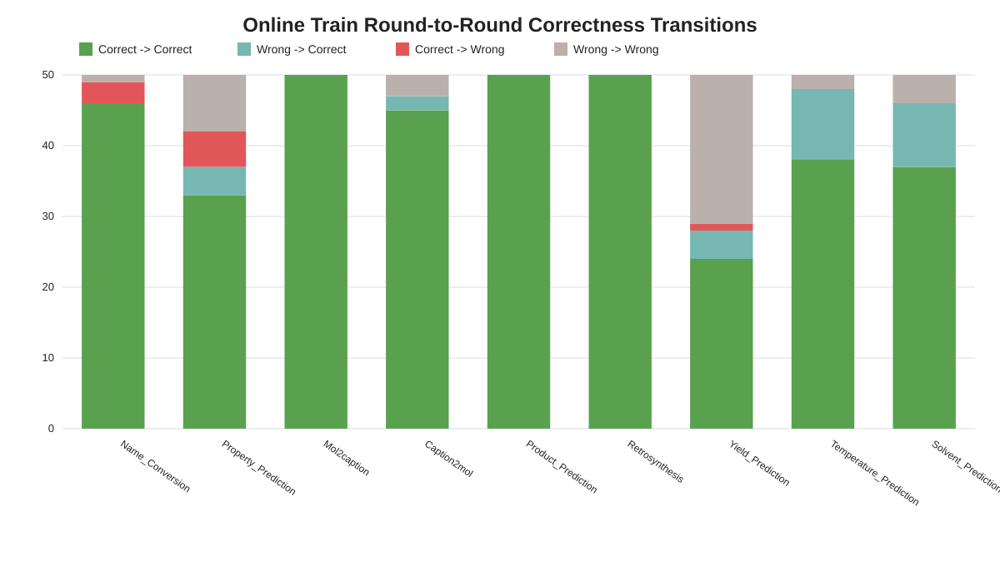
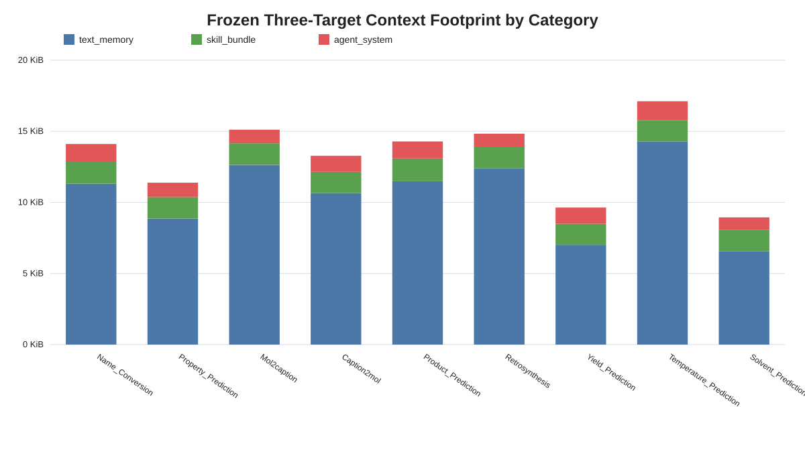

净差 6 道全部来自 Temperature_Prediction：baseline 47/50，evolved 41/50；排除 Temperature 后两组都是 341/400。Temperature 的未校正 p=0.03125，但 9 类 Holm 校正后 p=0.28125，只能作为工程诊断信号。


| Category | Baseline | Evolved | E-B | B only | E only | p | Holm p |
|---|---|---|---|---|---|---|---|
| Name_Conversion | 47/50 (94.00%) | 45/50 (90.00%) | -4.0 pp | 2 | 0 | 0.5 | 1 |
| Property_Prediction | 37/50 (74.00%) | 38/50 (76.00%) | +2.0 pp | 4 | 5 | 1 | 1 |
| Mol2caption | 49/50 (98.00%) | 49/50 (98.00%) | +0.0 pp | 0 | 0 | 1 | 1 |
| Caption2mol | 44/50 (88.00%) | 47/50 (94.00%) | +6.0 pp | 1 | 4 | 0.375 | 1 |
| Product_Prediction | 50/50 (100.00%) | 50/50 (100.00%) | +0.0 pp | 0 | 0 | 1 | 1 |
| Retrosynthesis | 50/50 (100.00%) | 50/50 (100.00%) | +0.0 pp | 0 | 0 | 1 | 1 |
| Yield_Prediction | 25/50 (50.00%) | 24/50 (48.00%) | -2.0 pp | 8 | 7 | 1 | 1 |
| Temperature_Prediction | 47/50 (94.00%) | 41/50 (82.00%) | -12.0 pp | 6 | 0 | 0.03125 | 0.2812 |
| Solvent_Prediction | 39/50 (78.00%) | 38/50 (76.00%) | -2.0 pp | 2 | 1 | 1 | 1 |
Train Round 0 为 382/450（84.89%），同题监督后的 Round 1 为 402/450（89.33%），+4.44 pp，p=0.001658。Round 1 已接收当前题 GT，因此衡量即时纠错，不是独立泛化。Temperature 在 Train 从 76% 到 96%，盲测却从 generation-zero 94% 到 evolved 82%，是最强的过拟合/负迁移信号。



| Category | Memory | Skill | Agent | Total |
|---|---|---|---|---|
| Name_Conversion | 11.3 KiB | 1.5 KiB | 1.3 KiB | 14.1 KiB |
| Property_Prediction | 8.9 KiB | 1.5 KiB | 1.0 KiB | 11.4 KiB |
| Mol2caption | 12.6 KiB | 1.5 KiB | 1.0 KiB | 15.1 KiB |
| Caption2mol | 10.7 KiB | 1.5 KiB | 1.1 KiB | 13.3 KiB |
| Product_Prediction | 11.5 KiB | 1.6 KiB | 1.2 KiB | 14.3 KiB |
| Retrosynthesis | 12.4 KiB | 1.5 KiB | 0.9 KiB | 14.8 KiB |
| Yield_Prediction | 7.0 KiB | 1.5 KiB | 1.1 KiB | 9.6 KiB |
| Temperature_Prediction | 14.3 KiB | 1.5 KiB | 1.3 KiB | 17.1 KiB |
| Solvent_Prediction | 6.6 KiB | 1.5 KiB | 0.9 KiB | 8.9 KiB |

先不重跑现有 Test。Stage A 只在 Temperature + Yield 的 Train/validation 上比较 generation-zero、memory-only、full-three，每 arm 至少 3 个 replicate；Stage B 再扩到九类，并允许每类独立选择 generation-zero。成功标准改为可重复的 held-out paired gain，而不是 Train R1 高于 R0。
两组均为可审计的 parent-prefix + recovery-suffix 组合，不是一次未中断运行；同 UID、顺序、split/config/model/runtime identity 均已绑定，公开 compatibility receipts 通过。每题仅一个有效 completion，故本报告是 paired descriptive comparison，不是随机化重复因果试验。
完整论证、阈值设计、证据身份和合规边界见同目录 ChemBench_STV3_最终会议汇报.md。本包不含题目、选项、GT、逐题预测、completion、transcript 或凭据。